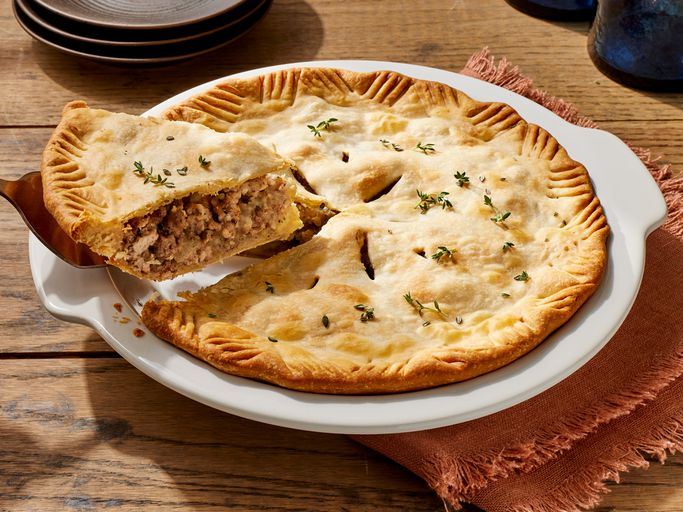
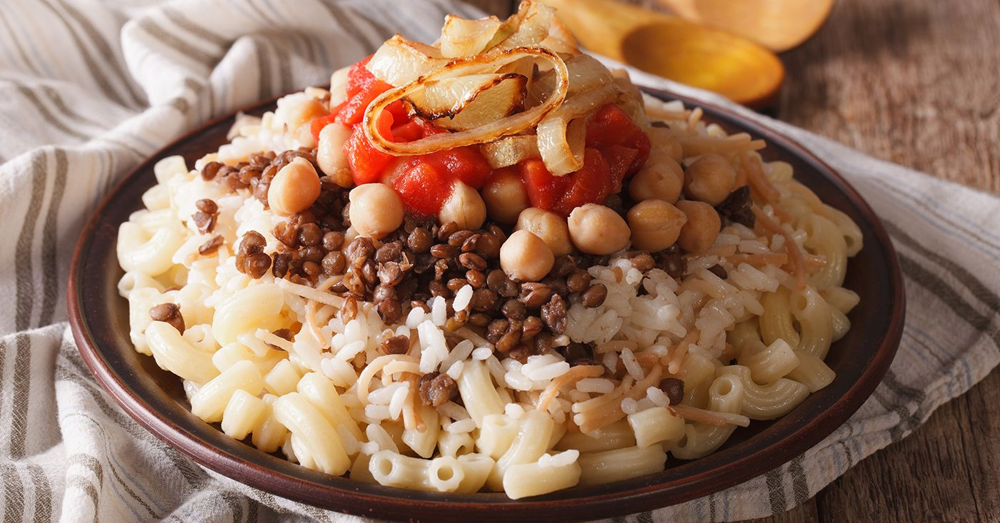

Arepas
País: Colômbia
Tipo: Prato típico
País: Japão
Tipo: Petisco
País: Colômbia
Tipo: Prato típico

País: Brasil
Tipo: Prato típico
País: EUA
Tipo: Prato típico

País: Austrália
Tipo: Prato típico

País: França
Tipo: Prato típico

País: Egito
Tipo: Prato típico
País: Coreia do Sul
Tipo: Prato típico
Takoyaki é um popular petisco japonês em formato de bolinhas, crocante por fora e macio por dentro, recheado com pedaços de polvo, gengibre e cebolinha. Originário de Osaka, é grelhado em chapas especiais e finalizado com molho takoyaki, maionese, aonori e katsuobushi.
Recheio:
• 300g de polvo (aprox. 3 tentáculos)
• Manteiga para untar
Massa:
• 200g de farinha de trigo
• 500ml de água
• 1 ovo
• Cebolinha a gosto
1. Cozinhe o polvo na panela de pressão por 7 minutos com 2 dedos de água.
2. Faça a massa misturando farinha, ovo, água e cebolinha picada.
3. Corte o polvo cozido em pequenos pedaços.
4. Unte a panela de takoyaki com bastante manteiga.
5. Adicione a massa líquida até a metade dos buracos e coloque o polvo com aonori.
6. Use 2 facas pequenas para virar a massa a 90º quando tostar.
7. Complete com mais massa e gire até formar bolinhas.
8. Quando crocante por fora e macio por dentro, sirva com molho takoyaki, maionese, aonori e katsuobushi.
As arepas são um prato tradicional colombiano feito de farinha de milho, muito consumido no café da manhã e como lanche. Podem ser recheadas com queijo, presunto, frango e muito mais.
• 1 xícara de farinha de milho para polenta
• 1 xícara de muçarela ralada
• 2 colheres (sopa) de manteiga derretida
• 1 xícara de leite
• 50g de manteiga
• 1 pitada de sal
• 100g de queijo e presunto
1. Misture a farinha de milho, o queijo e o sal em uma tigela.
2. Acrescente o leite e a manteiga derretida e misture bem.
3. Deixe a massa descansar por 5 minutos.
4. Modele discos de massa, semelhantes a pequenas panquecas.
5. Unte uma frigideira com manteiga e leve ao fogo médio.
6. Doure cada lado por cerca de 5 minutos.
7. Corte ao meio e recheie com queijo e presunto.
8. Volte à frigideira para derreter o recheio e sirva quente.
A feijoada é um prato tradicional brasileiro feito com feijão-preto e diferentes carnes, muito consumido em refeições especiais. É um prato muito associado à cultura popular e aos encontros em família, especialmente aos fins de semana.
• 500g Feijão-preto
• 300g Carne-seca dessalgada
• 2 unidades Linguiça calabresa
• 300g unidades Costelinha suína
• 2 folhas de louro
• 3 dentes de alho picados
• 1 unidade de cebola picada
• Água o quanto baste
1. Deixe as carnes salgadas de molho, trocando a água, se necessário, para retirar o excesso de sal.
2. Cozinhe o feijão-preto em panela com água até começar a amolecer.
3. Em outra panela, doure a cebola e o alho.
4. Adicione as carnes e refogue por alguns minutos.
5. Misture tudo ao feijão e acrescente as folhas de louro.
6. Deixe cozinhar em fogo baixo até o caldo engrossar e os sabores se incorporarem.
7. Sirva com arroz, couve refogada, farofa e fatias de laranja.
O hambúrguer é um prato composto por uma carne moída, geralmente bovina, que é grelhada e servida em um pão cortado ao meio. É um dos pratos mais populares da culinária norte-americana.
• 500g de carne moída (dá 2 a 3 hambúrgueres grandes).
• Sal e pimenta-do-reino moída na hora.
• Queijo Cheddar (o alaranjado é o mais clássico).
• Pão de hambúrguer (tipo Brioche ou com gergelim).
• Manteiga para o pão.
Complementos:
•Picles de pepino, cebola roxa, alface americana e tomate
1. Modele: Com as mãos frias, faça bolas de carne e molde o disco sem apertar demais (para manter a suculência). Dica: faça um pequeno buraco com o polegar no centro do disco para que ele não "inche" ao fritar.
2. Toste o Pão: Passe manteiga no pão e doure-o na frigideira até criar uma barreira crocante. Isso impede que o suco da carne encharque o pão.
3. Frite: Aqueça bem uma frigideira (preferencialmente de ferro) ou grelha. Só agora coloque bastante sal e pimenta apenas no lado de cima da carne. Coloque na frigideira com o tempero para baixo. Tempere o outro lado enquanto frita.
4. Não aperte! Nunca pressione a carne com a espátula, ou você vai expulsar todo o suco.
5. O Queijo: Assim que virar a carne, coloque a fatia de queijo por cima. Se quiser que derreta rápido, coloque uma tampa na frigideira por 30 segundos
Uma torta salgada muito popular no país é o lanche mais icônico da Austrália e da Nova Zelândia, considerada quase um prato nacional.
• 350g de filé mignon Minerva Seleção (cozido e desfiado)
• 5 colheres (sopa) de azeite para refogar
• 1 cebola picada
• 1 dente de alho picadinho
• 1 colher (sopa) de farinha de trigo
• 1/3 de xícara de molho de tomate
• 1 tomate picado sem pele e sem semente
• 2 colheres (sopa) de molho inglês
• ⅔ de xícara (chá) de caldo do cozimento da carne
• 2 colheres (sopa) de salsinha cortada
• Sal a gosto
• Pimenta-do-reino preta moída a gosto
• 400g massa folhada pronta
1. Em uma panela média, aqueça o azeite e refogue levemente a cebola e o alho. Acrescente o filé mignon já cozido e desfiado, sal e pimenta-do-reino preta moída a gosto e mexa bem.
2. Salpique a farinha de trigo sobre a carne e, sem parar de mexer, acrescente o molho de tomate, o tomate picadinho, o molho inglês e o caldo de carne. Continue mexendo até engrossar um pouco o molho. Retire do fogo e espere esfriar.
3. Em uma forma redonda, acomode a massa folhada na base e nas laterais. Adicione o recheio, salpique a salsinha e cubra com mais massa folhada.
4. Preaqueça o forno a 200ºC e asse a torta por 20 minutos ou até dourar. Sirva como lanche da tarde ou no horário que preferir!
O croissant é um pão folhado típico da França, conhecido por sua textura crocante por fora e macia por dentro.
Massa:
• 3 xícaras de Farinha de Trigo
• 2 colheres (sopa) rasas de açúcar Globo;
• ½ xícara de água em temperatura ambiente;
• 3 colheres (sopa) de manteiga em temperatura ambiente;
• 1 colher rasa (sobremesa) de sal;
• 1 colher (sopa) cheia de fermento biológico instantâneo (10g);
• 2 ovos ligeiramente batidos;
• 1 ovo batido para pincelar;
Para folhar a massa:
• 1 colher (sopa) de farinha de trigo;
• 100 g de manteiga em temperatura ambiente;
Recheio:
• 300 g de mussarela;
• 300g de presunto;
Preparo da Massa
1. Misture 1/2 xícara de farinha, açúcar e fermento.
2. Adicione água, sal, ovos, 3 colheres de manteiga e bata bem.
3. Incorpore o restante da farinha e sove em uma superfície enfarinhada até ficar homogênea.
4. Deixe descansar por 40 minutos.
Folhado e Montagem
1. Misture os 100g de manteiga com 1 colher de farinha.
2. Abra a massa com um rolo, espalhe essa mistura de manteiga e dobre a massa como um "pacote".
3. Abra novamente até formar um retângulo (1 cm de espessura) e corte em 10 triângulos.
4. Recheie com presunto e muçarela e enrole da base (parte maior) para a ponta.
Finalização
1. Coloque em uma assadeira untada (deixe a pontinha para baixo).
2. Deixe crescer por 10 minutos enquanto o forno pré-aquece em temperatura média.
3. Pincele com ovo batido e asse por cerca de 15 minutos (até dourar).
Dica de Ouro: Colocar a ponta fina da massa por baixo na assadeira garante que o croissant não desenrole enquanto assa!
Prato tradicional feito com arroz, macarrão e lentilhas. é o prato nacional do Egito e uma das comidas de rua mais populares e amadas do país.
• 3 xicaras de arroz branco;
• 1 xícara de lentilhas;
• 1 xícara de grão de bico;
• 1 xícara de macarrão espaguete;
• 1 xícara de macarrão pai nosso;
• 1 xícara de macarrão cabelo de anjo quebrado em pequenos pedaços;
• 2 cebolas grandes cortada em rodelas finas;
• 2 dentes de alho amassados;
• Suco de dois limões;
• 1 colher de sopa de vinagre;
• 1 xícara de água;
• 6 tomates médios maduros;
• Azeite de oliva;
• 1 cebola grande ralada;
• Óleo para fritar;
• Sal, pimenta do reino e cominho a gosto;
Grão de bico
De um dia para o outro, deixe o grão de bico de molho, no dia seguinte, lave bem, e leve ao fogo para cozinhar. Deixe esfriar.
Preparando o arroz com macarrão cabelo de anjo
Coloque óleo na panela e adicione o macarrão cabelo de anjo bem quebradinho. Em fogo baixo deixe o macarrão dourar, em seguida jogue o arroz, misture, e deixe secar, quando tudo estiver sequinho, adicione sal a gosto, água e deixe cozinhar. Reserve. Aqui no Egito eles usam um macarrão conhecido como shareya ele é pareceido com o cabelo de anjo mas já vende quebradinho.
Lentilhas
Refogue metade da cebola ralada com azeite de oliva e em seguida jogue a lentilha, cubra com água, tempere com sal, cominho e pimenta do reino. Deixe cozinhar. Reserve.
Cozinhando as massas
Temos dois tipos de macarrão, cozinhe-os separadamente com água e um pouco de sal. Reserve.
Molho de tomate
Bata os tomates no liquidifador, em seguida refogue a outra metade da cebola com azeite de oliva, e em seguida jogue o suco do tomate. Deixe cozinhar por volta de 15 a 20 minutos em fogo médio/baixo. Quando estiver pronto, tempere com sal e pimenta.
Molho de alho
Misture o alho, suco de limão, vinagre e água, em seguida tempere com sal, pimenta e cominho. (não leve ao fogo)
Cebola frita
Pega a cebola junto com o óleo e coloque numa frigideira, ligue o fogo e deixe ela fritar até dourar (não aqueça o óleo antes, junte a cebola com o óleo frio). Quando a cebola estiver dourada retire do óleo e deixe secar num papel toalha.
Montagem do prato
Há quem prefira servir as porções separadas na mesa e cada um monta seu prato do jeito que preferir. Mas a maneira tradicional é servir o prato já feito. A montagem do prato de koshari é bem fácil, basta colocar cada coisa uma em cima da outra, mas seguindo uma determinada ordem:
1. Arroz com macarrão cabelo de anjo
2. Lentilha
3. Os dois tipos de macarrão
4. Molho de tomate
5. Grão de bico
6. Cebola frita
7. Molho de alho
Kimchi é um alimento fermentado coreano, feito principalmente com repolho, cenoura e pimenta. É uma parte essencial da dieta coreana e é conhecido por seus benefícios para a saúde digestiva.
• 1 acelga grande;
• Sal grosso;
• 1 Nabo;
• Cebolinha;
• 4 dentes de alho picados;
• Gengibre ralado;
• Pimenta coreana em pó (Gochugaru).
1. Corte a acelga em pedaços e deixe de molho em sal grosso por 2 horas para desidratar.
2. Enxágue bem a acelga para remover o excesso de sal.
3. Misture o alho, gengibre, nabo fatiado, cebolinha e a pimenta até formar uma pasta.
4. Esfregue a pasta em cada folha de acelga..
5. Coloque em um pote hermético e deixe fermentar fora da geladeira por 1 a 2 dias antes de refrigerar.